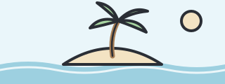
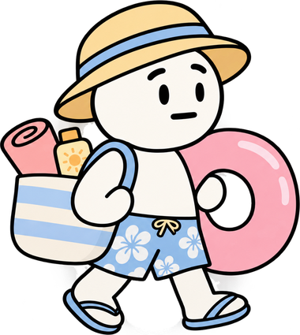
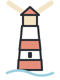

L'île Chrome
Mon site de plage
Bienvenue ! Réservez votre transat face à la mer.
RéserverCap au large! Pour communiquer, les bateaux ont besoin de règles communes. Sur le web, c'est pareil : ce sont les standards.
J'ai tout ce qu'il faut ! On jette une bouteille à la mer ?

Les standards du web sont un ensemble de règles et de recommandations qui permettent de créer des sites et des applications web compatibles, accessibles et fonctionnels sur différents navigateurs et appareils. Ils sont notamment définis par le W3C.
Glissons la même petite page web dans une bouteille et envoyons-la vers trois îles : chacune représente un navigateur. Que va-t-elle afficher en arrivant ?

L'île Chrome
Mon site de plage
Bienvenue ! Réservez votre transat face à la mer.
RéserverL'île Firefox
Mon site de plage
Bienvenue ! Réservez votre transat face à la mer.
RéserverL'île Safari
Mon site de plage
Bienvenue ! Réservez votre transat face à la mer.
RéserverComme les phares qui guident les bateaux, des organisations guident ceux qui construisent le web :

Fondé en 1994 par Tim Berners-Lee, l'inventeur du web.
Créé en 2004 par Apple, Mozilla et Opera.
… et d'autres organisations encore.
Une page web se construit avec trois langages de base, comme un bateau : ajoutez-les un par un et regardez ce qui change.
Le chantier est vide…
Bienvenue à bord !
Notre bateau vous emmène découvrir les standards du web.
Bon voyage ! ⚓
Cliquez sur 1. HTML pour commencer la construction.
HTML = la coque. Il pose la structure : les titres, les paragraphes, les images. La page existe, mais elle est toute simple.
CSS = la peinture et les voiles. Il s'occupe des couleurs, des polices et de la mise en page : la décoration.
JavaScript = le moteur. Il ajoute les animations et les boutons qui réagissent. Essayez le bouton de la page !
C'est le protocole de conversation entre votre navigateur et le serveur (par exemple : « donne-moi cette page »). Le HTTPS est sa version sécurisée.
Un bon site doit pouvoir être utilisé par n'importe qui, avec n'importe quel outil. Par exemple, une personne aveugle doit pouvoir le parcourir grâce à un lecteur d'écran. Pour cela, les sites doivent respecter les WCAG, les règles d'accessibilité du W3C.